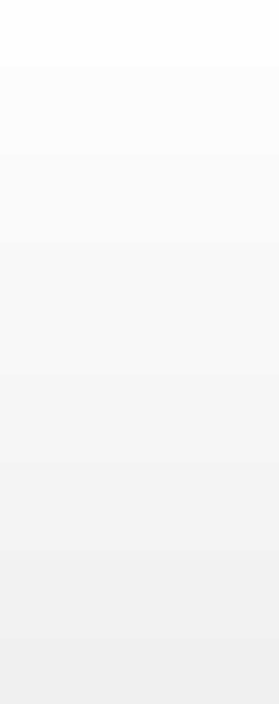
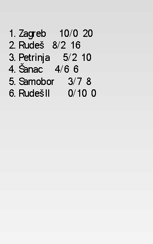
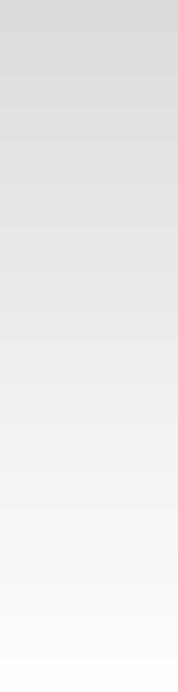
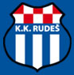
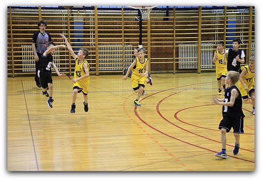
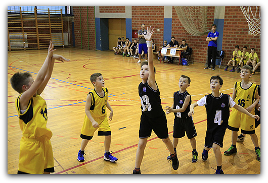

Naslovna > Vijesti > Seniori > Mlađi Kadeti > Kadeti > Juniori > Sportske škole > Rezultati

TABLICA





LISTA NAJBOLJIH STRIJELACA
1. ŽARKOVIĆ (Zagreb) 179
2. SKAZLIĆ (Rudeš) 119
3. ŠOŠIĆ (Petrinja) 92
4. PALOKAJ (Zagreb) 90
1. ŽARKOVIĆ (Zagreb) 179
2. SKAZLIĆ (Rudeš) 119
3. ŠOŠIĆ (Petrinja) 92
4. PALOKAJ (Zagreb) 90
Završila je osma sezona mini lige Rudeš za sezonu 16/17
Pobjednik je KK Zagreb iz čijih redova dolaze najbolji strijelac Žarković i najbolji igrać Palokaj.
Mali košarkaši KK Rudeša zauzeli su drugo mjesto a KK Šanac treće.
Domaćini KK Rudeš ponovo se pokazao kao izvrstan organizator a u prilog tome govori veliko zadovoljstvo svih natjecatelja kao i njihovih roditelja.
Košarkaški klub Rudeš upravo obnavlja malu dvoranu gdje bi se turnir trebao onda preseliti te na organizacijskom i igračkom planu još malo podignuti ljestvicu.
Posebne čestitke malim košarkašima Rudeša na osvojenom drugom mjestu kao i njihovim trenerima bez kojih ovo nebi bilo moguće.

POLUFINALE
RUDEŠ – PETRINJA 45:21
Rudeš:Skazlić 16,Hrapić,Mihaljević 3,Petrović 10,Peranić,Kurečić 2,Medić 4,Dražetić 2,Bjelica 2,Miholić Mat.,Miholić Mar.,6,Mraković
Petrinja:Cvetanović,Bezak 5,Ćubić 6,Anušić 2,Šimundić,Drakulić,Križanović 8,Duspara,Križić
ZAGREB - ŠANAC
Zagreb:Žarković 22,Pravdić 2,Čabraja 2,Bojanić 9,Palokaj 2,Žugaj 4,Lebeda,Peroković 2,Grubić,Mladinić 2,Gerovac 7,Savinc 7,Bandov
Šanac:Bošnjak 4,Milek,Marković K.5,Milanović 6,Močnik 6,Katić,Prpić,Marković S.5,Tatalović,Perši 4

FINALE
RUDEŠ - ZAGREB 25:51
Rudeš:Skazlić 8,Hrapić 2,Mihaljević,Petrović 2,Peranić,Kurečić 1,Medić 2,Dražetić ,Bjelica 11,Miholić Mat.,Miholić Mar.,Mraković
Zagreb:Žarković 11,Pravdić 6,Čabraja 7,Bojanić 2,Palokaj 2,Žugaj 4,Lebeda 6,Peroković 5,Grubić 2,Mladinić 2,Gerovac 2,Savinc 2,Bandov
3 MJESTO
PETRINJA - ŠANAC 24:44
Petrinja:Cvetanović,Bezak 4,Ćubić 12,Anušić,Šimundić,Drakulić,Križanović 4,Duspara,Križić 4
Šanac:Bošnjak 3,Milek 4,Marković K.8,Milanović 12,Močnik 8,Katić 2,Prpić,Marković S.,Tatalović 4,Perši 3